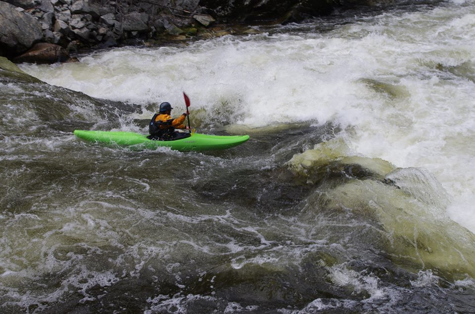

About Paul D. Siskind
THE PRESENT
Who is Paul Siskind?

He has a tendency to go kayaking like some people go to work.
So much so that he put his life on hold in various ways to try and realize his potential.

But, sometimes you got to think about the little people who are depending on you.
Making sacrifices and leaving home.